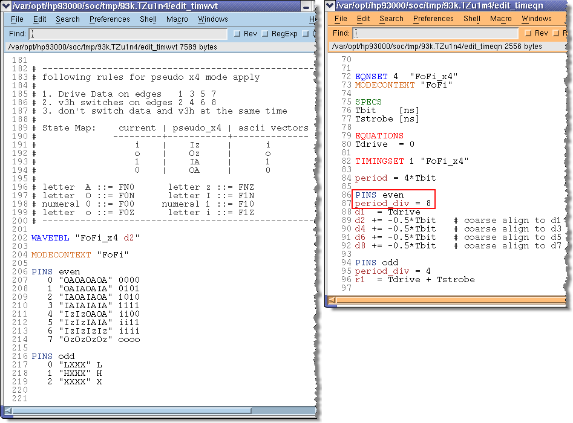
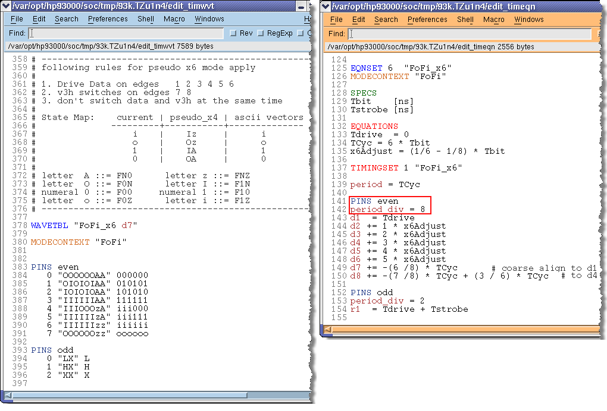
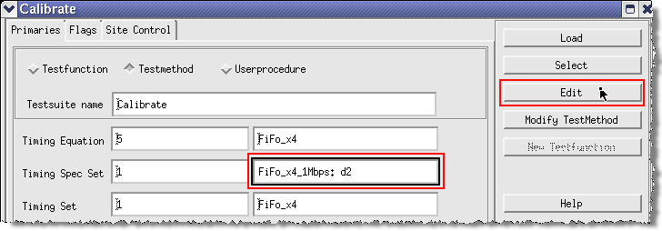
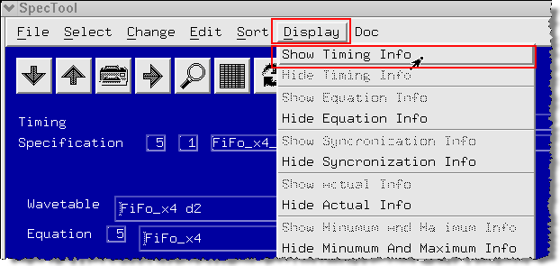
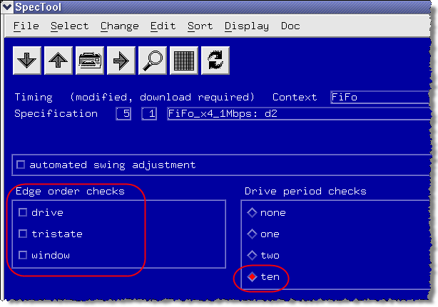

Prepare timing
As the internal mode is X8 the period_div needs to be set to 8 for both, mid-level X4 and mid-level X6 mode.
Setup timing equations for mid-level X4
Drive edges d1, d3, d5 and d7 are dedicated data drive edges, edges d2, d4, d6 and d8 are dedicated mid-level edges, which get "pre-aligned" to d1, d3, d5 and d7 (see Supported x-modes) in timing equations (see following figure):

Setup timing equations for mid-level X6
Drive edges d1, d2, d3, d4, d5 and d6 are dedicated data drive edges, edges d7 and d8 are dedicated mid-level edges, which get "pre-aligned" to d1 and d4 (see Concept) in timing equations (see following figure):

Edit Timing Spec Set
Click in the Timing Spec Set field of the Calibrate test method and click the Edit button.

In the SpecTool window, choose .

Unselect all Edge order checks and set Drive period checks to Ten.
